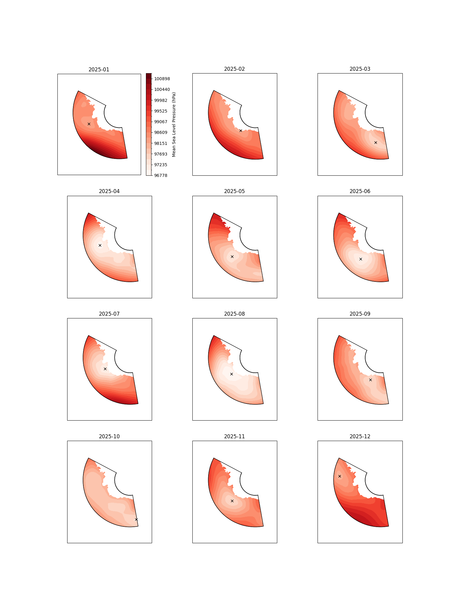
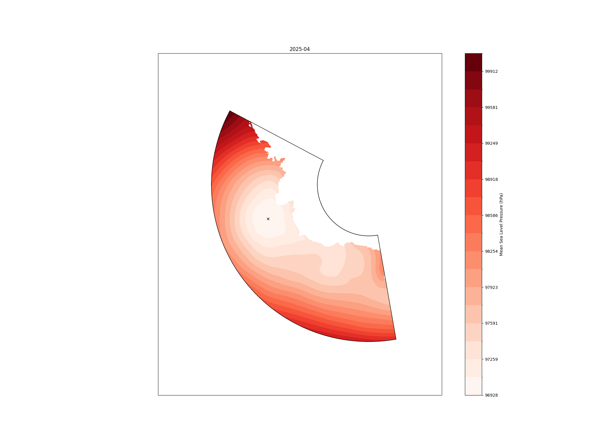

Python interface¶
More customisation is available through the python interface, also allowing integration with the rest of a python workflow.
Basic usage is explained here, for detailed information on the python api, see the API reference.
Downloading data¶
Setting up Climate Data Store Credentials
To download these data from the Copernicus Climate Data Store, you will need an account and API key.
Please see the CDS API documentation: https://cds.climate.copernicus.eu/how-to-api
Register an account and create your API key file at $HOME/.cdsapirc
The contents should look like:
url: https://cds.climate.copernicus.eu/api
key: <PERSONAL-ACCESS-TOKEN>
You can either download your own data, or the package provides two functions for downloading the land-sea mask and ERA5 monthly averaged data respectively. These are wrappers around cdsapi.
from asli.data import get_land_sea_mask, get_era5_monthly
help(get_land_sea_mask)
...
help(get_era5_monthly)
...
Land-sea mask¶
To download the land-sea mask for the Amundsen Sea region:
get_land_sea_mask(data_dir="./data", filename = "era5_lsm.nc")
The default bounds are for the Amundsen Sea region only, but any rectangular region with additional border around can be specified using the area and border arguments.
ERA5 Data¶
get_era5_monthly can be used to download monthly averaged ERA5 variables for a given rectangular region, with surrounding border, Amundsen Sea by default.
get_era5_monthly(data_dir="./data"
vars = ["msl"],
start_year = 1959,
end_year = 2026,
)
Values in the vars list can be one or more of "msl" (default), "tas", "uas", "vas" corresponding to "mean_sea_level_pressure", "2m_temperature", "10m_u_component_of_wind", and "10m_v_component_of_wind, respectively.
Running calculations¶
Import the package and create an instance of the ASLICalculator class, initialising with the locations of the land-sea mask and mean sea level pressure data:
import asli
a = asli.ASLICalculator(mask_filename="./data/era5_lsm.nc",
msl_pattern="./data/era5/monthly/era5_mean_sea_level_pressure_monthly_1988.nc"
)
then read in the data and perform the calculation:
a.read_mask_data()
a.read_msl_data()
a.calculate()
Outputting data as a csv file¶
Once the calculations are done, we can write out the dataframe to a csv file, providing the filename:
a.to_csv('asl.csv')
Plotting¶
Basic plots of the pressure fields and lows can be made using the Plotter class from the asli.plot module.
First, instantiate the Plotter object with your ASLICalculator object a from above, with the calculations already done.
from asli.plot import Plotter
plotter = Plotter(a)
Importing calculations from file
Optionally, calculations already saved to file can be read back in to a new ASLICalculator object with its import_from_csv() method, for instance in a new session, for plotting. Note that to plot from a new object, the read_mask_data() and read_msl_data() (or just read_data()) methods will need to be run first, for example:
import asli
b = asli.ASLICalculator(mask_filename="./data/era5_lsm.nc",
msl_pattern="./data/era5/monthly/era5_mean_sea_level_pressure_monthly_1988.nc"
)
b.read_data()
b.import_from_csv('asl.csv')
Plots can be made of the whole range, one year, or one month using the Plotter methods plot_all(), plot_year() or plot_month() respectively.
For example, for one year:
fig, ax = plotter.plot_year(year=2025)

or for one month
fig, ax = plotter.plot_month(year=2025, month=4)

These methods all return a matplotlib figure object.
Additional arguments can be passed to all of these commands to control the plotting, for full details see plot_month in the API reference.
Working with Zarr and Object Storage¶
The asli package also supports Zarr data import from s3 storage through the python interface. The method remains the same, but you will need to install the [s3] optional dependencies.
pip install git+https://github.com/antarctica/asli[s3]
Additionally you will need to provide the location of your s3 config file, to the ASLICalculator class:
from pathlib import Path
a = asli.ASLICalculator(mask_filename="s3://asli/zarr-lsm",
msl_pattern="s3://asli/zarr-msl",
s3_config_dir = Path.home(), # Default location
s3_config_filename = ".s3cfg" # Default location
)
Below is an example of an s3 config file, ~/.s3cfg. This example is adapted from the JASMIN documentation on using object storage. Other object store providers can be used, but the config at a minimum should contain the [default] header and provide access key, host_base, host_bucket and secret_key.
[default]
access_key = <access key>
host_base = my-os-tenancy-o.s3-ext.jc.rl.ac.uk
host_bucket = my-os-tenancy-o.s3-ext.jc.rl.ac.uk
secret_key = <secret key>
use_https = True
signature_v2 = False